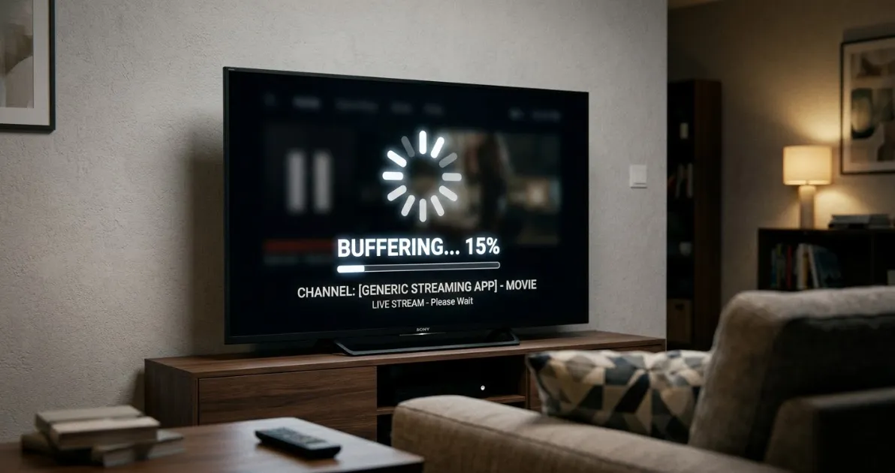
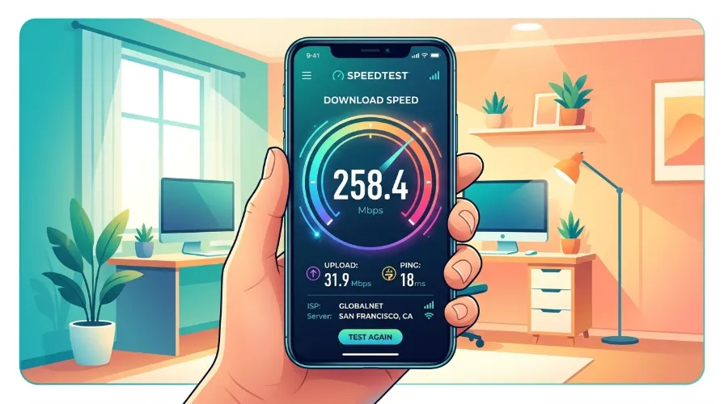
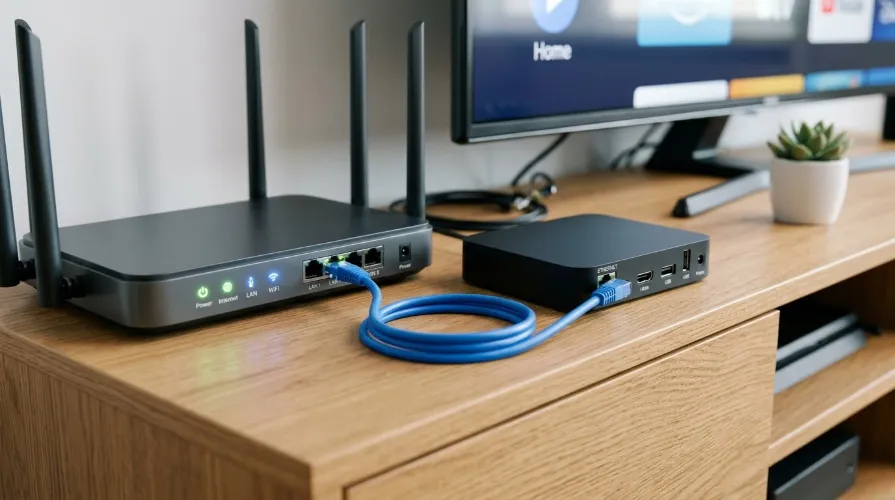
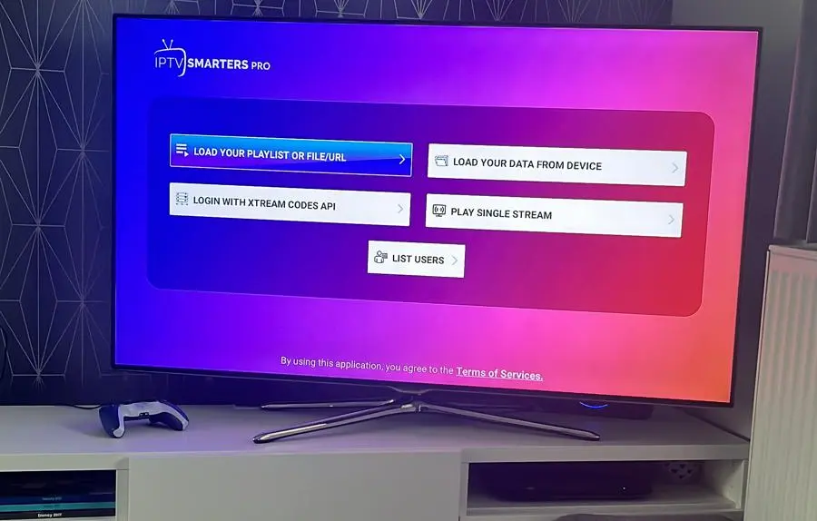

How to Fix IPTV Buffering: 10 Solutions

Buffering has a limited number of causes. Work through these ten solutions in order, from quickest to more involved, and test playback after each one.
The 10 fixes
1. Test your internet speed
Run a speed test on the same device. Compare the result with the speed guidelines.
2. Use a wired connection
Ethernet removes Wi-Fi interference, the most common cause of freezing.

3. Restart everything
Power off the device, router and modem for a minute, then start them again.
4. Reduce other network traffic
Large downloads or several video streams at once can use your bandwidth.
5. Move closer or change Wi-Fi band
If you need Wi-Fi, use 5 GHz and place the router near the device.

6. Close background apps
Free memory on low-power sticks and boxes.
7. Clear the app cache
In device settings, clear cache for your player, not its data, unless you want to log in again.
8. Try another player setting
Switch the player engine or stream format in apps such as IPTV Smarters.

9. Check your playlist and credentials
A broken or expired source causes errors. Review the M3U guide.
10. Contact your provider
If one channel fails while others work, the issue may be at the source.
Setting up a device again? See the Firestick guide.
Frequently asked questions
Why does IPTV buffer only in the evening?
Network congestion at peak times can slow your connection or the provider's servers.
Will a VPN fix buffering?
Sometimes it helps if your internet provider throttles traffic, but it can also slow your connection.
How do I know it is my internet or the service?
If other streaming apps run fine at the same moment, the problem is more likely the source.